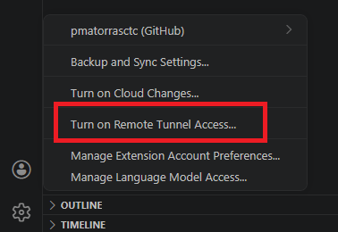
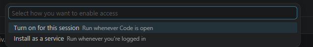
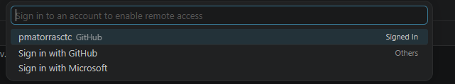
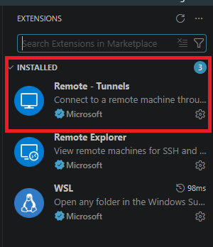
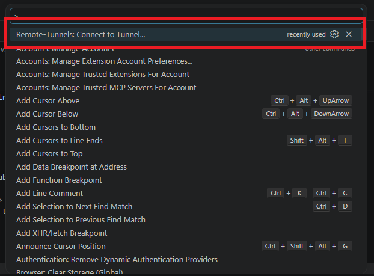
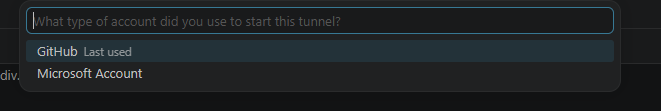
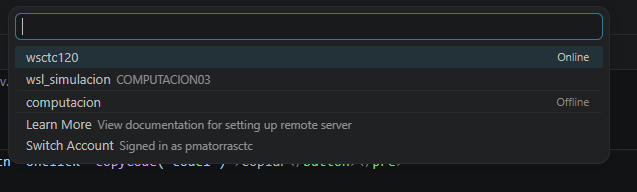
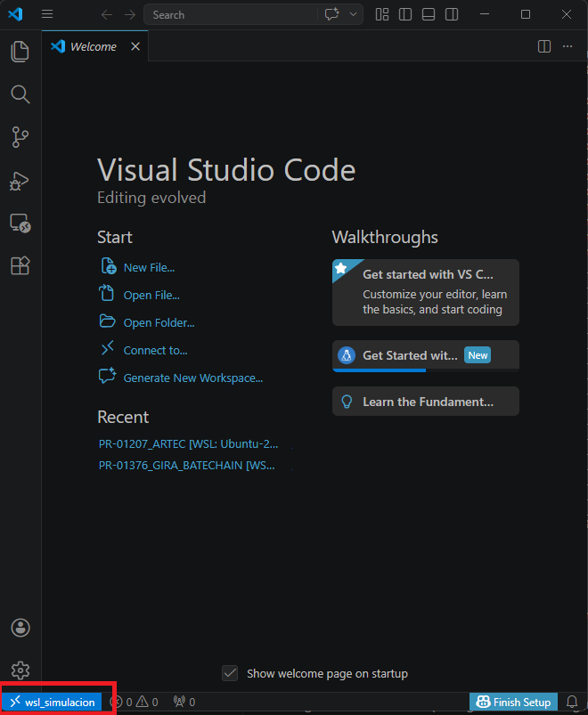

This step-by-step guide explains how to securely connect to development environments using VS Code Tunnels, and avoid issues related to TSPlus.
VS Code Tunnels is a free Visual Studio extension developed by Microsoft. For more information, see the official documentation.
If you need a dedicated account to use VS Code Tunnel (to resolve GitHub configuration issues), you can create one before starting the tunnel on the remote machine.
adduser is the simplest way to create a regular user because it creates the home directory and guides through the initial setup.
sudo adduser USERNAME
If that user also needs admin permissions, add them to the sudo group:
sudo usermod -aG sudo USERNAMEAfter creating the user, continue with the tunnel setup steps below.
You can start the tunnel in two ways on the host machine:
Open VS Code on the machine, click the Accounts menu (bottom left) and select Turn on Remote Tunnel Access.



The CLI will ask you to authenticate with a GitHub or Microsoft account. It will provide a device code and a URL.
https://github.com/login/deviceOnce authenticated, the terminal will show a unique URL for your machine (e.g. https://vscode.dev/tunnel/machine-name).
From a Web Browser:
Simply open the link directly. You can code from within the browser.
From your Local VS Code:

F1 and run Remote - Tunnels: Connect to Tunnel...



Once connected, your setup is saved and you can write and run code on your local machine as if you were on the remote server. Keep in mind that while you can write code, use the terminal, see printouts (logs) and open images or files directly inside the VS Code editor, you cannot open the Windows/Linux file explorer to view external images or documents. For that, you can save generated files to a path shared between your local and remote machine (OneDrive or a shared folder on the shared server (e.g. nassimulacion)), or continue using TSPlus.
If the host machine has no graphical interface, start the tunnel from the terminal:
code tunnelhttps://github.com/login/device) and a code. Open it in your browser and authorise.Once connected, the process will block the terminal. Press Ctrl + C to stop it before continuing.
If you only use the command above, the tunnel will stop when the SSH session closes. To make it persistent and survive reboots, install it as a service:
code tunnel service installYou can check the logs at any time with code tunnel service log.
Even after installing the service, the tunnel may disconnect every morning. This happens because systemd user sessions are tied to login sessions — they stop when the user logs out or the session times out (typically after ~12 hours). The service appears to "restart on login" because logind recreates the user session at that point.
To make the user session (and the tunnel service) persistent across logouts and reboots, run the following as root:
loginctl enable-linger USERNAMEThis tells systemd to keep the user's session alive even when no one is logged in, so the tunnel service never gets terminated overnight.